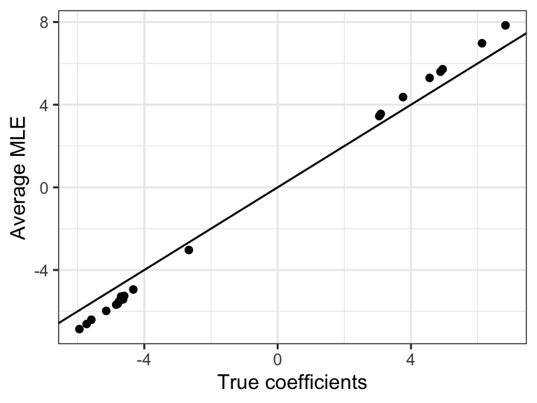
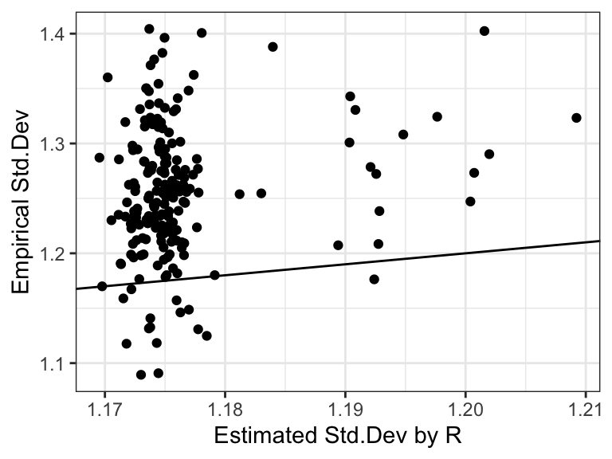
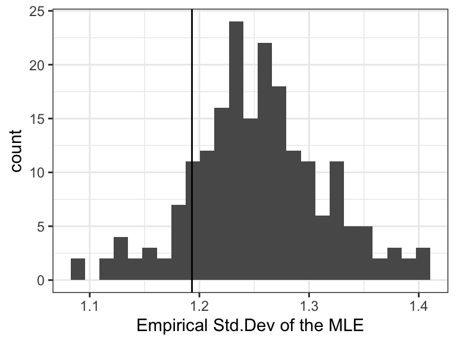
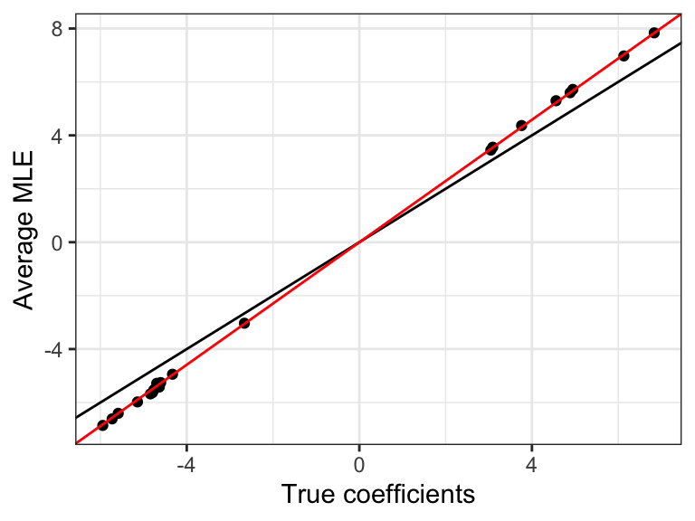
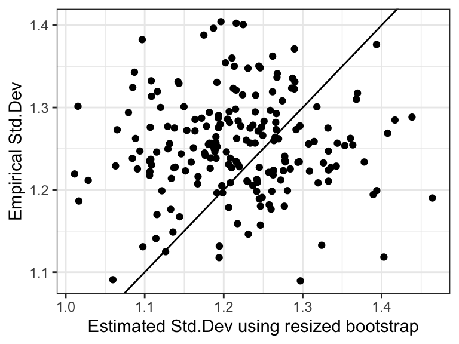

n <- 2000; p <- 200Resized booststrap demo
We demonstrate the resized bootstrap method by studying a logistic regression where the covariates are from a multivariate \(t\)-distribution. We set the number of variables to be \(p=200\) and the number of observations to be \(n = 2000\) (\(\kappa = p/n = 0.1\)).
We now set up the covariance matrix and write a function to sample the covariates.
# set the covariance matrix to be a circular matrix
rho <- 0.5
x <- rho^(c(0:(p/2), (p/2-1):1))
Sigma <- toeplitz(x)
R <- chol(Sigma)
# the MVT has 8 degrees of freedom
nu <- 8sample_x <- function(){
X <- matrix(rnorm(n*p, 0, 1), n, p)
chi <- rchisq(n, df = nu) / (nu - 2)
X <- X %*% R / sqrt(chi) / sqrt(p)
}Then, we randomly generate coefficients and we sample the response from a logistic model.
beta <- numeric(p)
nonnull <- sample(1:p, 20, replace = F)
beta[nonnull] <- rnorm(20, 5, 1) * sample(c(-1, 1), size = 20, replace = T)sample_y <- function(X, beta){
mu <- 1 / ( 1 + exp(-X %*% beta))
Y <- rbinom(n, 1, mu)
Y
}We repeat this experiment 200 times to compute the bias and standard deviation of the MLE.
B <- 200
BetaHat <- matrix(0, B, p)
StdR <- matrix(0, B, p)
for(b in 1:B){
X <- sample_x()
Y <- sample_y(X, beta)
fit <- glm(Y ~ X + 0, family = binomial)
StdR[b, ] <- summary(fit)$coef[ ,2]
BetaHat[b, ] <- fit$coef
# cat(b, ",")
}Bias and std.dev of the MLE
According to classical theory, the average MLE should be approximately the true model coefficient. We also show a line with zero intercept and unit slope. We can see that the absolute value of the MLE is biased upwards.

Next, we compare the empirical standard deviation of the MLE with the estimate by R. We observe that the classical theory underestimates the standard deviation of the MLE.

High-dimensional theory
We compute estimated bias and standard deviation from the high-dimensional theory.
gamma <- sqrt(beta %*% (Sigma %*% beta) / p) # the covariance matrix of X is Sigma
# solve the parameter in the high-dimensional theory
params <- find_param(kappa = p/n, gamma = gamma, beta0 = 0, intercept = F)
# compute tau
tau <- 1 / sqrt(diag(solve(Sigma)))
# compute the theoretical std
std_theory <- params[3] / tau
# empirical std
std_empirical <- apply(BetaHat, 2, sd)The covariance matrix is special in that the theoretical standard deviation are equal for every coordinate, so we plot a histogram of the empirical standard deviation and show the theoretical value by the black line. Since we observe that the theoretical Std. Dev underestimates the empirical Std.Dev, we expect that the CI using the high-dimensional theory would undercover true model coefficients.
ggplot() + geom_histogram(aes(x = std_empirical), bins = 25) +
geom_vline(xintercept = std_theory[1]) +
xlab("Empirical Std.Dev of the MLE") +
theme_bw()
The resized bootstrap method
We now apply the resized bootstrap for one observed sample. Remember that we want to choose \(\beta^s = s \times \hat{\beta}\) such that
\[ \mathrm{Var}(X^\top \beta) = \beta^{s\top} \Sigma \beta^s / p = \gamma^2. \]
This implies
\[ s^2 = \frac{\gamma^2}{\hat{\beta}^\top \Sigma \hat{\beta} / p}. \]
# Obtain one sample
X <- sample_x()
Y <- sample_y(X, beta)
fit <- glm(Y ~ X + 0, family = binomial, x = T, y = T)
beta_hat <- fit$coef# Compute s
s <- gamma / sqrt(t(beta_hat) %*% (Sigma %*% beta_hat) / p)
# Compute the resized coefficient beta_s
beta_s <- s[1,1] * beta_hat After computing \(s\), we generate bootstrap samples and compute the bootstrap MLE.
B <- 100
bootSample <- matrix(0, B, p)
for(b in 1:B){
mub <- 1/(1+exp(-X%*%beta_s))
Yb <- rbinom(n, 1, mub)
fit_b <- glm(Yb ~ X + 0, family = binomial)
bootSample[b, ] <- fit_b$coef
# if(b %% 5 == 0) cat(b, ",")
}We estimate the bias and the variance using the bootstrap sample.
# standard deviation
std_boot <- apply(bootSample, 2, sd)
# estimate the bias
alpha_boot <- lm(colMeans(bootSample) ~ beta_s, weights = 1/std_boot^2)$coefWe can compare the average Std. Dev estimated using the resized bootstrap with the empirical Std. Dev and we see that they are similar.
mean(std_boot)[1] 1.230177mean(std_empirical)[1] 1.254274Above, we assume that the true signal strength \(\gamma\) is known, but in reality we need to estimate \(\gamma\). The glm_boot function estimates \(\gamma\) and implements the resized bootstrap method using the estimated \(\gamma\).
fit_boot <- glm_boot(fit, b_boot = 100, verbose = F)We can compute the estimated bias and the Std. Dev using the resized bootstrap method. In the figure below ,the red line shows the estimated bias using the resized bootstrap method.

Next, we compare the empirical standard deviation of the MLE with the estimate by the resized bootstrap. The estimated signal strength is 1.5234649 (the true $= $1.5678907). The resized bootstrap provides a more accurate estimate of the Std. Dev compared to the classical or high-dimensional theory.
